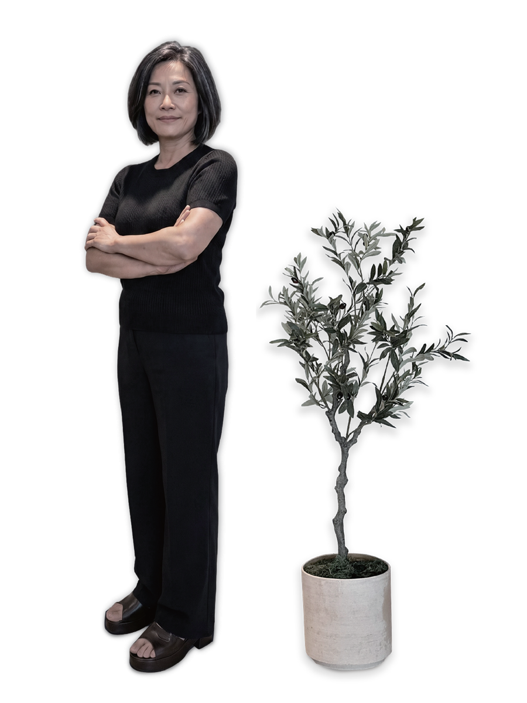
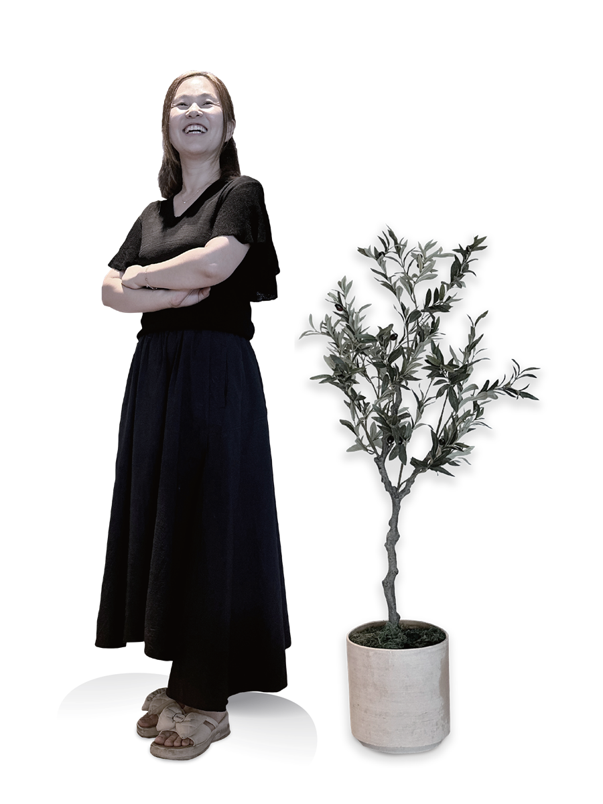
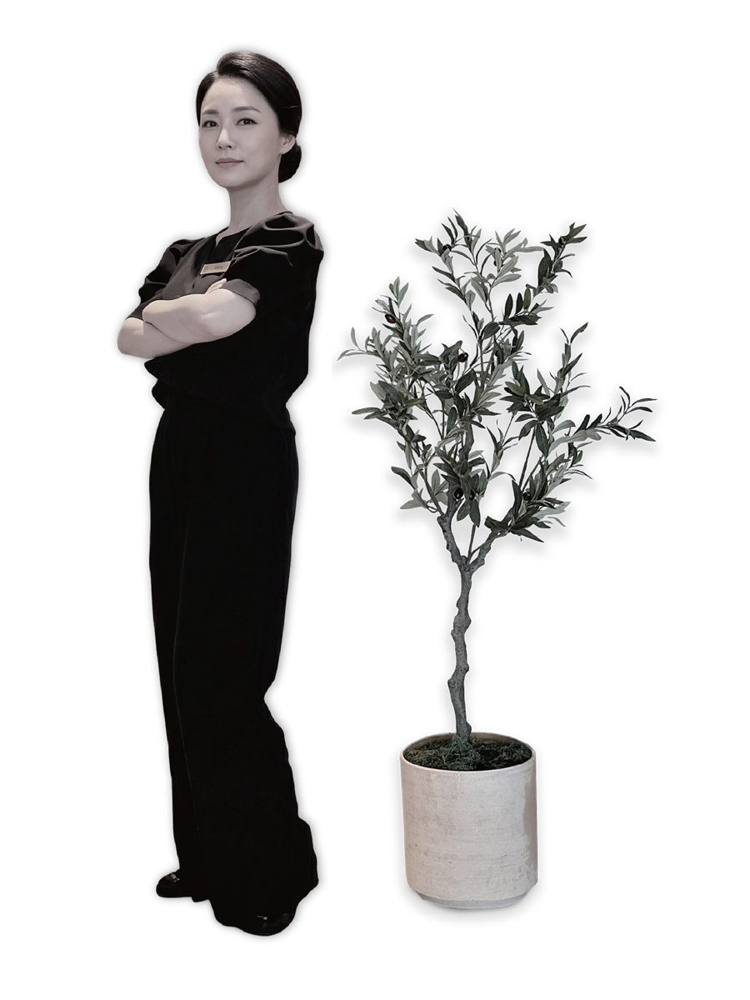
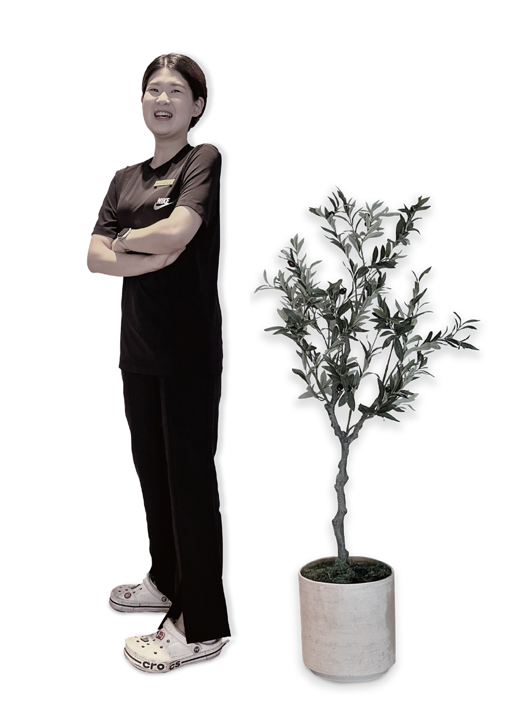
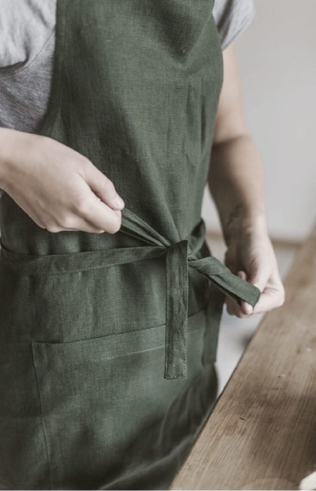

Manpower
인공지능과 AIoT가 정감호텔을 움직이는 시대에도, 사람의 온기는 결코 대신할 수 없습니다. 정감을 만드는 사람들을 소개합니다.
People of Junggam
정감호텔에서 무인과 자동화는 사람을 대체하기 위한 것이 아닙니다. 반복적인 일을 기술에 맡기고, 사람은 더 사람다운 환대에 집중하기 위함입니다.
General Manager · 총지배인
“광고에서 감동을 줬던 내가, 이제 정감의 얼굴을 책임집니다.”
Q. 총지배인으로 가장 중요하게 생각하는 가치는?
고객이 머무는 동안 느끼는 모든 감정의 책임자라고 생각합니다. 작은 디테일 하나까지 ‘정감답게’ 채우는 것이 제 역할입니다.
Q. 운영에서 가장 중요하게 여기는 원칙은?
기술이 앞서가더라도 사람의 온기는 잃지 않는 것. 효율과 환대 사이의 균형을 지키는 것이 제가 지키는 원칙입니다.
Q. 정감호텔이 지향하는 모습은?
한 번 머문 손님이 다시 찾고 싶은 호텔. 오래 사랑받는 따뜻한 머무름을 만드는 것이 우리의 목표입니다.


Management Director · 운영이사
“호텔이라는 숨은 심장, 제가 책임집니다.”
Q. 운영이사로서 가장 중요하게 보는 것은?
눈에 보이지 않는 시스템과 흐름입니다. 객실 하나가 완벽하게 준비되기까지의 모든 과정을 설계하고 관리합니다.
Q. 정감호텔의 운영이 다른 곳과 다른 점은?
AIoT 시스템과 사람의 손길이 어우러진 운영입니다. 데이터로 효율을 높이고, 사람으로 온기를 더합니다.
Q. 운영자로서의 다짐은?
고객이 미처 말하지 않은 불편까지 먼저 헤아리는 것. 보이지 않는 곳에서 완벽을 만드는 것이 제 일입니다.
Front Office · F/O
“호텔의 얼굴은 프론트에서 시작됩니다.”
Q. 무인 체크인 시대에 프론트의 역할은?
기계가 할 수 없는 ‘사람의 환대’를 전합니다. 무인 시스템이 편리함을 준다면, 우리는 따뜻함을 더합니다.
Q. 가장 보람을 느끼는 순간은?
손님이 ‘덕분에 편하게 잘 쉬었다’고 말해줄 때. 그 한마디가 모든 피로를 잊게 합니다.
Q. 앞으로의 다짐은?
고객 한 분 한 분의 리듬에 맞춰, 머무는 내내 편안함을 느끼도록 세심하게 응대하겠습니다.


Back Office · B/O
“언제나 웃는 얼굴로, 따뜻한 첫인상을 전하고 싶어요.”
Q. 백오피스에서 가장 신경 쓰는 부분은?
손님이 보지 못하는 곳일수록 더 꼼꼼하게. 청결과 준비가 곧 머무름의 품질이라고 믿습니다.
Q. 일하면서 가장 뿌듯할 때는?
완벽하게 정돈된 객실을 볼 때, 그리고 그 공간에서 손님이 편안해할 모습을 상상할 때입니다.
Q. 앞으로의 바람은?
보이지 않는 자리에서도 정감의 따뜻함이 머물도록, 늘 한결같은 마음으로 일하고 싶습니다.
Food & Beverage · F&B
“잘 차리려고 하지 않아요, 진심을 담아서 해요.”
Q. 정감의 조식이 특별한 이유는?
화려하지 않아도 정성스럽게. 매일 아침, 머무는 분들의 하루를 따뜻하게 여는 한 끼를 준비합니다.
Q. 가장 중요하게 여기는 것은?
신선한 재료와 진심. 손이 조금 더 가더라도 직접 만든 정성을 담으려 합니다.
Q. 손님께 전하고 싶은 말은?
한 끼의 식사가 여행의 좋은 기억이 되기를. 진심을 담아 정감의 맛을 전하겠습니다.

“기술은 효율을 만들고, 사람은 기억을 만듭니다.”정감호텔을 움직이는 사람들
05 — Manpower
훈련된 브랜드 마인드와 정서적 깊이를 가진 사람들이, 기계가 대신할 수 없는 진정성으로 정감의 시간을 완성합니다.